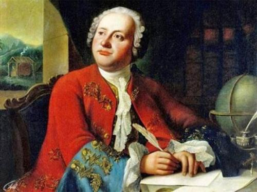
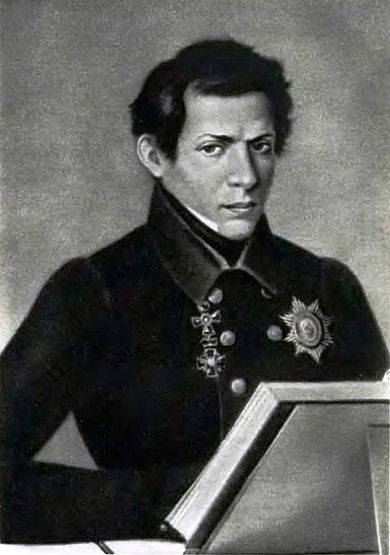
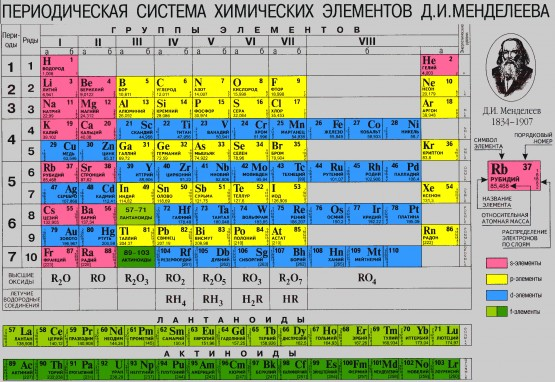
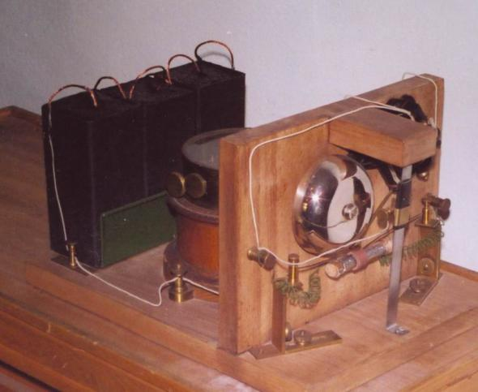
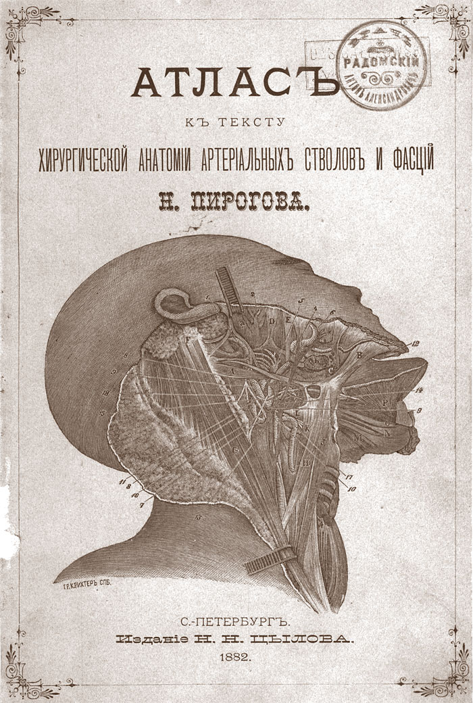
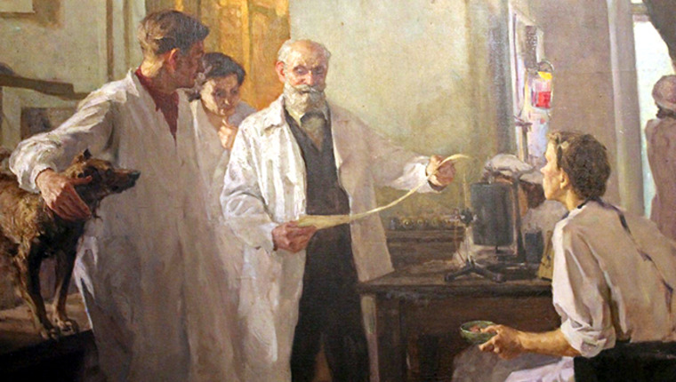
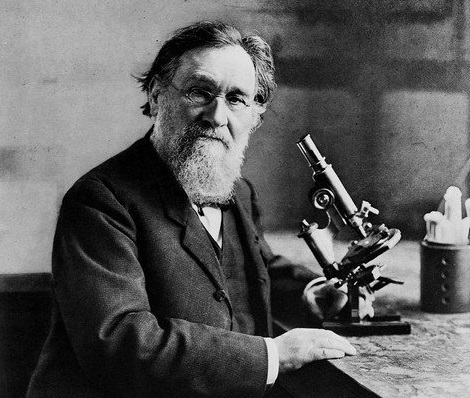
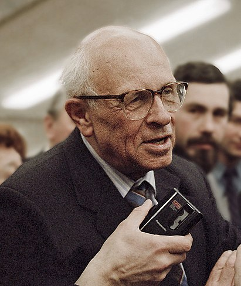
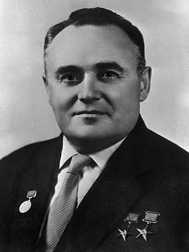
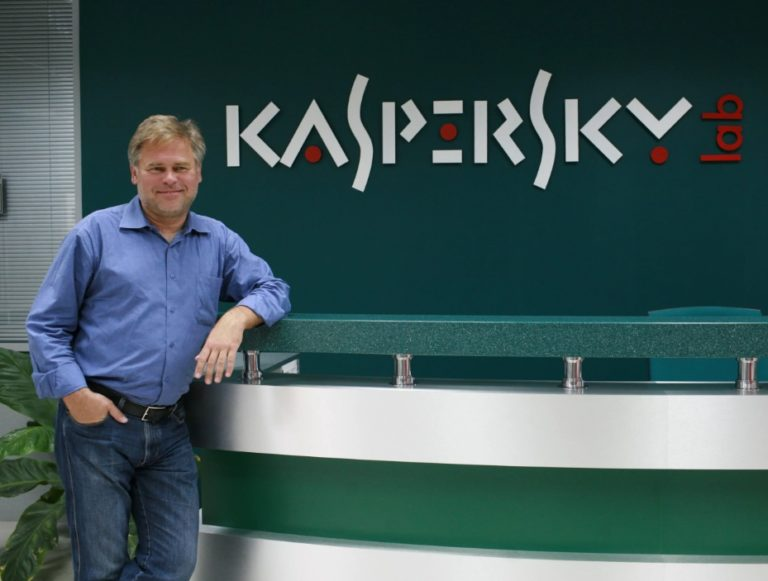

ТОП 10 русских учёных
Россия – родина многих известных ученых. Они не только совершили открытия в самых разных областях науки – от физики и до офтальмологии, – но также нашли практическое применение своим научным теориям. Их изобретениями пользуются люди во всем мире.
10. Михаил Ломоносов
Ломоносов Михаил Васильевич (1711-1765) – первый русский учёный-естествоиспытатель, получивший мировое признание, энциклопедист и художник, поэт и филолог, физик, химик, астроном. Работал в области молекулярно-кинетической теории тепла, географии, металлургии, геологии, истории. Ему принадлежит открытие атмосферы у планеты Венеры. Он является основоположником науки о стекле, а также разработчиком проекта Московского университета, который в будущем назвали его именем. Занимался приборостроением, генеалогией. Основными целями его жизни было развитие российской науки, а также просвещения и экономики. Работал на должности статского советника. В 1745 году получил звание профессора химии. В Санкт-Петербургской Императорской академии наук являлся действительным членом, а также был почётным членом в Королевской академии наук Швеции. Один из самых ярких представителей «универсального человека».
Сделал немало открытий в разных областях науки, в частности, впервые сформулировал всеобщий закон сохранения материи и движения (1760 год), создал молекулярно-кинетическую теорию тепла, основал науку о стекле. Разработал проект первого в России классического университета – Московского университета (1755 год).
9. Николай Лобачевский
Николай Иванович Лобачевский (20 ноября (1 декабря) 1792, Нижний Новгород — 12 (24) февраля 1856, Казань) — российский математик, один из создателей неевклидовой геометрии, деятель университетского образования и народного просвещения. Известный английский математик Уильям Клиффорд назвал Лобачевского «Коперником геометрии».
Лобачевский в течение 40 лет преподавал в Императорском Казанском университете, в том числе 19 лет руководил им в должности ректора; его активность и умелое руководство вывели университет в число передовых российских учебных заведений. По выражению Н. П. Загоскина, Лобачевский был «великим строителем» Казанского университета. Создатель неевклидовой геометрии при жизни был подвержен травле учёными, не сумевшими понять его научные труды и открытие нового вида геометрии. Признание трудов Лобачевского и их вклада в мировую науку пришло только после смерти учёного. При этом он не только занимался научными работами, но и внёс большой вклад в развитие Казанского университета. Существует несколько гипотез о рождении учёного, личная жизнь которого так же весьма запутана и неоднозначна. Широкое признание его геометрии пришлось к 100 летнему юбилею ученого.
8. Дмитрий Менделеев
Дмитрий Иванович Менделеев (1834-1907) – русский ученый-энциклопедист. В 1869 г. открыл периодический закон химических элементов — один из основных законов естествознания. Он оставил свыше 500 печатных трудов, среди которых классические «Основы химии» — первое стройное изложение неорганической химии. Также Д.И. Менделеев является автором фундаментальных исследований по физике, метрологии, воздухоплаванию, метеорологии, сельскому хозяйству, экономике, народному просвещению, тесно связанных с потребностями экономического развития России. Организатор и первый директор Главной палаты мер и весов. Многие из нас знают Дмитрия Ивановича Менделеева как выдающегося химика, создателя системы химических элементов. Но это только часть заслуг и достижений великого ученого. Он был физиком, занимался исследованиями в области геологии, гидродинамики, метрологии. Этого человека современники называли глубоким знатоком промышленности, приборостроения, экономики, воздухоплавания. Несмотря на свою занятость наукой, Менделеев много времени уделял общественной деятельности. Этот великий человек обладал нестандартным мышлением, был настоящим трудоголиком.
7. Александр Попов
Александр Степанович Попов (4 [16] марта 1859, Турьинские рудники, Пермская губерния — 31 декабря 1905 [13 января 1906], Санкт-Петербург) — русский физик и электротехник, профессор, изобретатель в области радиосвязи, Почётный инженер-электрик (1899), статский советник (1901). Одним из первых нашел практическое применение электромагнитных волн, в том числе для радиосвязи. Создал совершенный для своего времени вариант радиоприемника (1895 год). А.С. Попова интересовали научные открытия во всех областях применения электричества. Он, например, занимался исследованиями только что открытых рентгеновских лучей. Им был изготовлен один из первых в России рентгеновских аппаратов, получены снимки различных предметов, в том числе снимок руки человека. При его поддержке в Кронштадтском военно-морском госпитале в 1897 году был оборудован рентгеновский кабинет, впоследствии некоторые боевые корабли были оснащены рентгеновскими аппаратами. Известно, что после сражения в Цусимском проливе на крейсере «Аврора», имевшем такую установку, была оказана помощь 40 раненым морякам.Перечень изобретений Александра Степановича Попова включает не только систему телеграфии без проводов и систему радиосвязи, но и первый прибор для регистрации электромагнитных излучений атмосферного происхождения — грозоотметчик (июль 1895 года); первый детекторный радиоприемник с приемом телеграфных сигналов на слух (сентябрь 1899 года); первый кристаллический точечный диод (июнь 1900 года); первая радиотелефонная система (декабрь 1903 года). 25 апреля (7 мая по новому стилю) 1895 г. Александр Степанович Попов впервые представил своё изобретение на заседании Русского физико-химического общества, где выступил с докладом и демонстрацией созданного им первого в мире радиоприемника. Этот день вошел в историю мировой науки и техники как день рождения радио.
6. Николай Пирогов
Николай Иванович Пирогов - русский хирург и анатом, естествоиспытатель и педагог, создатель первого атласа топографической анатомии, основоположник военно-полевой хирургии, основатель анестезии. Член-корреспондент Санкт-Петербургской академии наук. Основное значение деятельности Н. И. Пирогова состоит в том, что своим самоотверженным и часто бескорыстным трудом он превратил хирургию в науку, вооружив врачей научно обоснованной методикой оперативного вмешательства. По вкладу в развитие военно-полевой хирургии он может быть поставлен рядом с Ларреем.Богатая коллекция документов, связанных с жизнью и деятельностью Н. И. Пирогова, его личные вещи, медицинские инструменты, прижизненные издания его произведений хранятся в фондах Военно-медицинского музея в Санкт-Петербурге. Особый интерес представляют двухтомная рукопись учёного «Вопросы жизни. Дневник старого врача» и оставленная им предсмертная записка с указанием диагноза своей болезни.
5. Иван Павлов
Иван Петрович Павлов (1849-1936) прожил почти 87 лет, по тем временам это считалось много. Академик Павлов - один из самых известных ученых России и мира, имя которого известно даже людям, далеким от науки. Иван Петрович Павлов - русский и советский ученый, физиолог. Академик Императорской Санкт-Петербургской академии наук. Председатель Общества русских врачей памяти С.П. Боткина. Работы академика Павлова высоко оценены и признаны обществом. Ему принадлежит большое количество открытий в области физиологии и психологии. Иван Петрович - основатель науки о высшей нервной деятельности. Создал науку о высшей нервной деятельности. Первый российский Нобелевский лауреат (1904 год). Удостоен награды за исследования физиологии пищеварения.
4. Илья Мечников
Мечникова называют одним из основоположников эволюционной эмбриологии и микробиологии. Он был учителем многих русских биологов и практически всех микробиологов. В медицине создал сравнительную патологию воспаления и фагоцитарную теорию иммунитета. Согласно этой теории болезнь рассматривается как борьба между агентами болезни — поступившими извне микробами — и защитными клетками (фагоцитами) самого организма. Излечение будет означать победу фагоцитов, а воспалительная реакция будет признаком их действия, достаточного для отражения атаки микробов. Эта теория противоречила распространенному тогда мнению о химической природе иммунитета, и на пути к признанию Мечникову пришлось выдержать немало дискуссий, в том числе с признанным авторитетом Кохом. В 1908 году Илье Мечникову, вместе с немецким иммунологом Эрлихом за открытие клеточного механизма иммунной защиты, будет присуждена Нобелевская премия по физиологии и медицине. Это открытие обессмертило имя микробиолога.
3. Андрей Сахаров
Российский ученый. Физик-теоретик. Доктор физико-математических наук. Академик Академии Наук России. Народный депутат. Общественный деятель. Правозащитник. Лауреат Нобелевской премии мира за 1975 год. Автор проекта конституции Союза Советских Республик Европы и Азии. Один из создателей первой отечественной водородной бомбы. Трижды Герой Социалистического Труда.Один из создателей водородной бомбы (1953) в СССР. Труды по магнитной гидродинамике, физике плазмы, управляемому термоядерному синтезу, элементарным частицам, астрофизике, гравитации, космологии. В 1950 году А. Д. Сахаров и И. Е. Тамм выдвинули идею осуществления управляемой термоядерной реакции для энергетических целей с использованием принципа магнитной термоизоляции плазмы. Сахаров и Тамм рассмотрели, в частности, тороидальную конфигурацию в стационарном и нестационарном вариантах (сегодня она считается одной из наиболее перспективных — см. Токамак). Сахаров — автор оригинальных работ по физике элементарных частиц и космологии: по барионной асимметрии Вселенной, где он связал барионную асимметрию с несохранением комбинированной чётности (нарушением CP-инвариантности), экспериментально обнаруженным при распаде долгоживущих мезонов, нарушением симметрии при обращении времени и несохранение барионного заряда (Сахаров рассмотрел распад протона). А. Д. Сахаров объяснил возникновение неоднородности распределения вещества из первоначальных возмущений плотности в ранней Вселенной, имевших природу квантовых флуктуаций. После открытия реликтового излучения новый анализ флуктуаций в ранней Вселенной был сделан Я. Б. Зельдовичем и Р. А. Сюняевым и независимо от них Дж. Пиблсом с J.T. Yu. Зельдович и Сюняев предсказали существование пиков в угловом спектре распределения реликтового излучения. Обнаруженные астрофизиками в 2000-х годах в эксперименте WMAP и других экспериментах акустические осцилляции реликтового излучения («сахаровские осцилляции») являются отпечатком тех самых возмущений плотности, которые теоретически описал Сахаров в своей работе 1965 года. Имеет работы по мюонному катализу (1948, 1957), магнитной кумуляции и взрывомагнитным генераторам (1965—1966); выдвинул теорию индуцированной гравитации и идею нулевого лагранжиана (1967), исследование высокомерных пространств с различным числом осей времени.
2. Сергей Королев
Сергей Павлович Королёв (1907-1966) — выдающийся конструктор и ученый, работавший в области ракетной и ракетно-космической техники. Дважды Герой Социалистического Труда, лауреат Ленинской премии, академик Академии наук СССР, он является создателем отечественного стратегического ракетного оружия средней и межконтинентальной дальности и основоположником практической космонавтики. Его конструкторские разработки в области ракетной техники представляют исключительную ценность для развития отечественного ракетного вооружения, а в области космонавтики имеют мировое значение. Он по праву является отцом отечественной ракетно-космической техники, обеспечившей стратегический паритет и сделавшей наше государство передовой ракетно-космической державой.
1. Евгений Касперский
Евгений Валентинович Касперский (род. 4 октября 1965, Новороссийск, Краснодарский край) — российский программист, один из ведущих мировых специалистов в сфере информационной безопасности. Один из основателей, основной владелец и нынешний глава АО «Лаборатория Касперского» — международной компании, занимающейся разработкой решений для обеспечения IT-безопасности, имеющей более 30 региональных офисов и ведущей продажи в 200 странах. Лауреат Государственной премии в области науки и технологий за 2008 год.Создатель антивирусного программного обеспечения, защищающего от вирусов, троянских, шпионских программ и неизвестных угроз. Вошел в сотню глобальных мыслителей (Global Thinker) по версии американского журнала Foreign Policy (2012 год). Почетный доктор наук Университета Плимута (Великобритания).